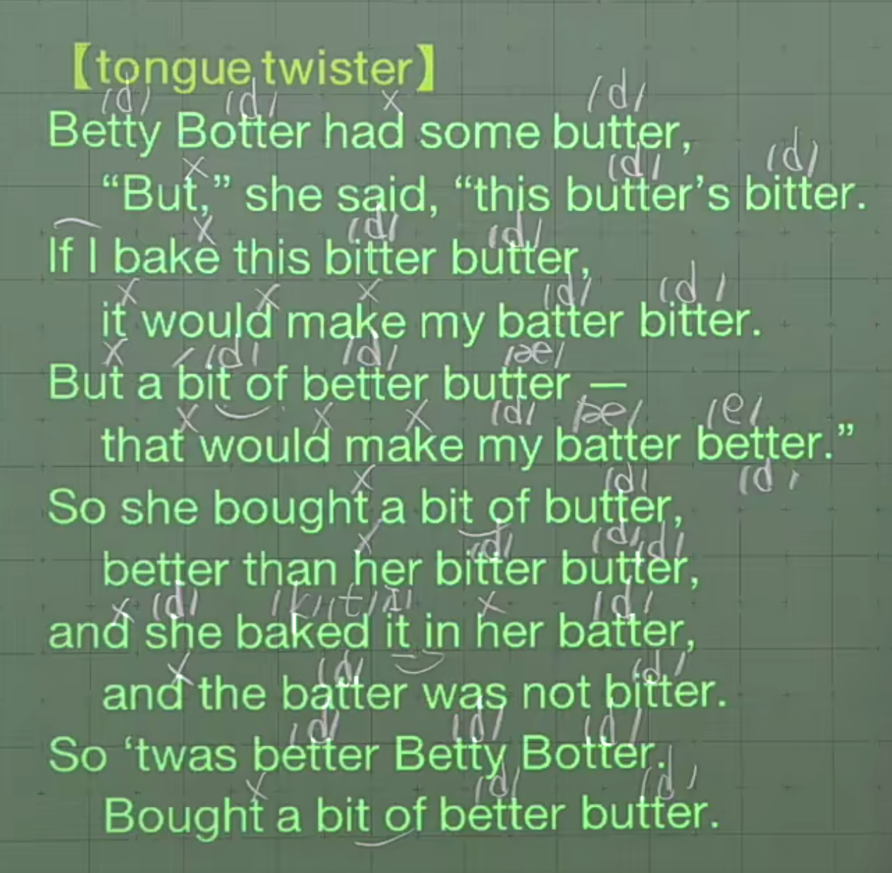

TreeviewCopyright © aleen42 all right reserved, powered by aleen42
T 的发言
1. t 在词首，或在重音节
发原音标 /t/，无变化
| 例句 | 变化前音标 | 变化后音标 |
|---|---|---|
| time | /taɪm/ | /taɪm/ |
| telephone | /ˈtelɪfoʊn/ | /ˈtelɪfoʊn/ |
| control | /kənˈtroʊl/ | /kənˈtroʊl/ |
| street | /striːt/ | /striːt/ |
2. t 在词（或句）中，且不在重音节
如果 t 在句中词尾，且后面单词首字母为元音，满足连读条件，同样适用该情况。如：How about it.
发清辅音 /t/ 对应的浊辅音 /d/
| 例句 | 变化前音标 | 变化后音标 |
|---|---|---|
| water | /ˈwɔːtər/ | /ˈwɔːdər/ |
| bottle | /ˈbɑːt(ə)l/ | /ˈbɑːd(ə)l/ |
| sweater | /ˈswetər/ | /ˈswedər/ |
| about it | /əˈbaʊt ɪt/ | /əˈbaʊdɪt/ |
| write a book | /raɪt ə bʊk/ | /raɪdə bʊk/ |
3. t 在词尾
/t/ -> 削弱音（只保留嘴型，不发出该音，但要小停顿一下）
| 例句 | 变化前音标 | 变化后音标 |
|---|---|---|
| We went to that hut. 我们去了那间小屋。 |
/wiː went tuː ðæt hʌt/ | /wiː wen |
| Put my hat back! 把我的帽子放回去。 |
/pʊt maɪ hæt bæk/ | /pʊ |
| She hit the hot hut with her hat. 她带着帽子抵达那炎热的小屋。 |
/ʃiː hɪt ðə hɑːt hʌt wɪð hər hæt/ | /ʃiː hɪ |
4. ~ten, ~tin, ~tain
/t/ -> 削弱音（只保留嘴型，不发出该音，但要小停顿一下）
| 例词/例句 | 变化前音标 | 变化后音标 |
|---|---|---|
| mountain 山，山岳 | /ˈmaʊnt(ə)n/ | /ˈmaʊn |
| in the mountain 在山上 |
/ɪn ðə ˈmaʊnt(ə)n/ | /ɪn ðə ˈmaʊn |
| curtain 窗帘，门帘 | /ˈkɜːrt(ə)n/ | /ˈkɜːr |
| a white curtain 一个白色的窗帘 |
/ə waɪt ˈkɜːrt(ə)n/ | /ə waɪ |
| important 必需的，重要的 | /ɪmˈpɔːrt(ə)nt/ | /ɪmˈpɔːr |
| the important written message 重要的书面信息 |
/ði ɪmˈpɔːrt(ə)nt ˈrɪt(ə)n ˈmesɪdʒ/ | /ði ɪmˈpɔːr |
5. 辅音 n + t + 元音（放松音）
| 例词/例句 | 变化前音标 | 变化后音标 |
|---|---|---|
| interview 面试；面谈 | /ˈɪntərvjuː/ | /ˈɪnərvjuː/ |
| a great interview 一个很好的面谈 |
/ə ɡreɪt ˈɪntərvjuː/ | /ə ɡreɪ |
| Internet 因特网 | /ˈɪntərnet/ | /ˈɪnərnet/ |
| on the Internet 在网上 |
/ɑːn ðə ˈɪntərnet/ | /ɑːn ðə ˈɪnərnet/ |
| interactive 交互的 | /ˌɪntərˈæktɪv/ | /ˌɪnərˈæktɪv/ |
| an interactive video 一个交互视频 |
/æn ˌɪntərˈæktɪv ˈvɪdioʊ/ | /æn ˌɪnərˈæktɪv ˈvɪdioʊ/ |
句子练习
| 例词/例句 | 变化后音标 |
|---|---|
| get at the heart of what drives us | /ɡedæðə hɑːrdəv wʌ |
短文练习
